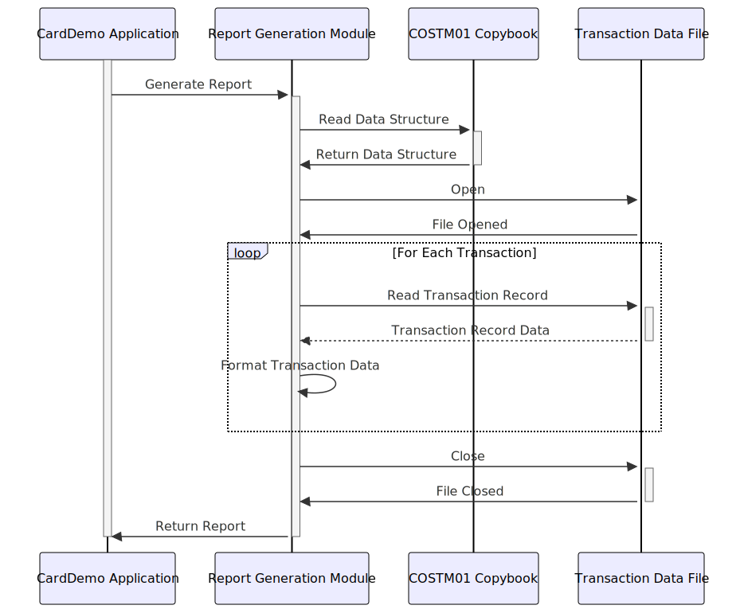

Gerado em: 1 de outubro de 2024
Título do Documento: Estrutura de Dados de Transações CardDemo
Descrição Resumida:
Este documento detalha o arquivo COSTM01.CPY, descrevendo a estrutura de dados utilizada para representar transações de cartão de crédito/débito dentro da aplicação CardDemo, especificamente para fins de relatórios. Ele enfatiza a organização de detalhes chave da transação, incluindo identificação, tipo, valor, informações do comerciante e timestamps.
Histórias do Usuário:
Como analista de dados, preciso de um formato padronizado para dados de transações para que eu possa gerar relatórios e analisar padrões de transações facilmente.
Épico Relacionado: 4 - Processamento de Transações
Requisitos Técnicos:
Definição da Estrutura de Dados:
COSTM01.CPY define a estrutura de dados TRNX-RECORD.TRNX-RECORD é subdividido em:
TRNX-KEY: Contém campos para identificar exclusivamente uma transação.
TRNX-CARD-NUM (PIC X(16)): Número do cartão de crédito/débito.TRNX-ID (PIC X(16)): Identificador único da transação.TRNX-REST: Contém informações detalhadas sobre a transação.
TRNX-TYPE-CD (PIC X(02)): Código do tipo de transação.TRNX-CAT-CD (PIC 9(04)): Código da categoria da transação.TRNX-SOURCE (PIC X(10)): Origem da transação (ex.: ONLINE, POS, ATM).TRNX-DESC (PIC X(100)): Descrição da transação.TRNX-AMT (PIC S9(09)V99): Valor da transação (com sinal, com 2 casas decimais).TRNX-MERCHANT-ID (PIC 9(09)): Identificador do comerciante.TRNX-MERCHANT-NAME (PIC X(50)): Nome do comerciante.TRNX-MERCHANT-CITY (PIC X(50)): Cidade do comerciante.TRNX-MERCHANT-ZIP (PIC X(10)): CEP do comerciante.TRNX-ORIG-TS (PIC X(26)): Timestamp de início da transação.TRNX-PROC-TS (PIC X(26)): Timestamp de processamento da transação.FILLER (PIC X(20)): Espaço reservado para alinhamento.Validação de Dados:
TRNX-CARD-NUM: Verificar o formato válido do número do cartão de crédito (ex.: usando o algoritmo de Luhn).TRNX-TYPE-CD: Validar em relação a uma lista de códigos de tipo de transação permitidos.TRNX-CAT-CD: Validar em relação a uma lista de códigos de categoria de transação permitidos.TRNX-AMT: Garantir que o valor esteja dentro de um intervalo razoável e tenha o sinal correto.TRNX-MERCHANT-ID: Validar em relação a um banco de dados de comerciantes ou a uma lista de IDs de comerciante conhecidos.TRNX-ORIG-TS e TRNX-PROC-TS: Validar o formato correto de data e hora.Modelos Relacionados:
cardNumber: String - Número do cartão de crédito/débito.transactionId: String - Identificador único da transação.typeCode: String - Código do tipo de transação (ex.: “PR” para compra).categoryCode: String - Código da categoria da transação (ex.: “FOOD” para supermercado).source: String - Origem da transação (ex.: “ONLINE”, “POS”).description: String - Descrição da transação.amount: Decimal - Valor da transação.merchantId: String - Identificador do comerciante.merchantName: String - Nome do comerciante.merchantCity: String - Cidade do comerciante.merchantZip: String - CEP do comerciante.initiationTimestamp: DateTime - Timestamp de início da transação.processingTimestamp: DateTime - Timestamp de processamento da transação.Configurações:
Códigos de Tipo de Transação:
TRAN-TYPES.datPR: CompraRF: ReembolsoAU: AutorizaçãoCódigos de Categoria de Transação:
TRAN-CATS.datFOOD: SupermercadoGAS: CombustívelTRVL: ViagemMelhorias de Código:
Tratamento de Erros:
Documentação:
Otimização de Desempenho:
Melhorias de Segurança:
Criptografia de Dados:
Controle de Acesso:
Auditoria:
Diagrama Conceitual:
–Made by “Smart Engineering” (by Compass.UOL)–